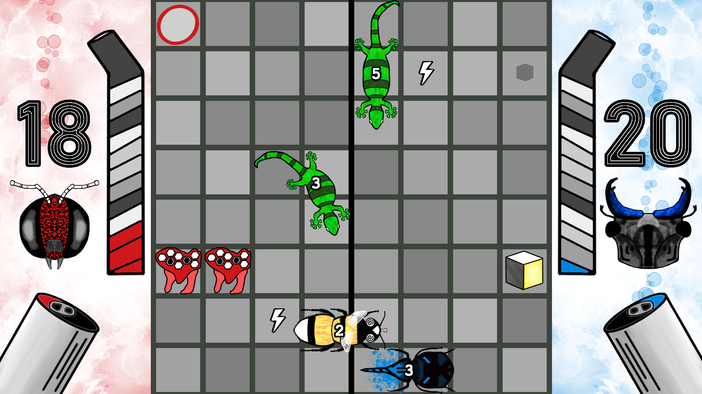
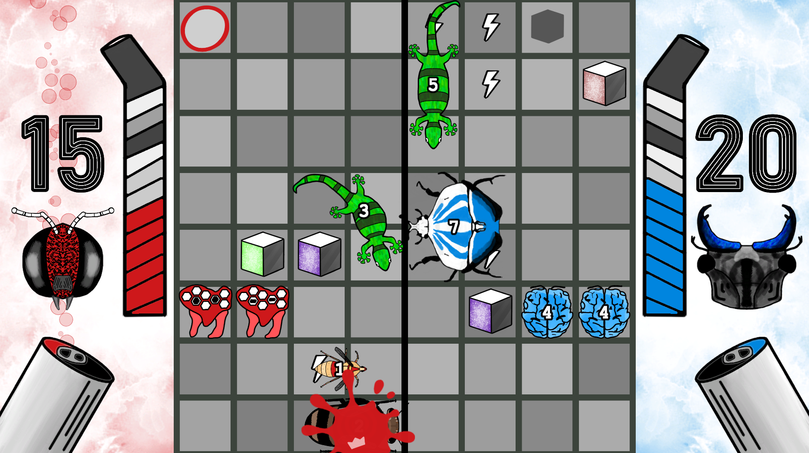

My hope for Nectar of the Gods is that it's a dynamic, competitive and fun head to head multiplayer experience both locally and online. But that doesn’t mean I don’t also want a challenging and engaging computer AI option to get scrappy with.
For the last 2 days I set out to implement a simple yet working AI solution as opposed to the random bug generator that I’ve been using for the prototype so far. In this blog post I will outline the strategy I used in a bit technical and a bit not that technical terms.
As a disclaimer I’ll say that even though I work professionally as a software engineer I am self taught and have no formal training or speciality in machine learning or artificial intelligence. This “AI” solution is really more of a homebrew algorithm as opposed to other AI strategies like Minimax or the Monte Carlo Tree Search. This solution is also in very very early days and will surely be iterated on many times over the course of development.
That being said let’s get into the problem scenario!
Nectar of the Gods is a head-to-head grid based real time strategy game where each player has 32 position options in which to place 8 unique bugs. Each player gets the same rate of resources over time to spend on bugs and each starts with 20 health. A player wins the game when the opposing player has 0 health.
Simple goals for an AI that is trying to win:
- AI should spend its resources on bugs
- AI should be able to place bugs to block enemy bugs defensively
- AI should be able to place bugs where enemy bugs are not offensively
- AI should place bugs to maximize with each bugs strength
The Implementation
1
I’ve established a list of offensive and defensive strategies for each bug family so that the AI can be seeded/primed with a random initial strategy at the start of the game.
Examples of offensive strategies would be like “3 ladybugs” or “rhino beetle combo” for the Beetle Brigade bug family. An example of a defensive strategy would be a well placed “executioner wasp” by The Hive. These strategies take advantage of unit synergies and specialities.
2
During the games “update” loop. The AI waits until it has enough resources and then executes its seeded strategy.
if (gameManager.AIResource >= nextCost)
{
gameManager.AIResource -= nextCost;
SmartMoveGenerator(nextBugStrategy);
}
3
The SmartMoveGenerator is now tasked with efficiently executing the seeded/chosen strategy.
4
The first thing the SmartMoveGenerator does is determine which tiles would be appropriate options for the incoming bug strategy.
if (stratTypeForPlacement == stratType.offensive)
{
possibleRows = getEnemyEmptyRows(stratTypeForPlacement);
placeTile = aiMaps[Random.Range(0, 2)] + possibleRows[Random.Range(0, possibleRows.Count)];
}
else
{
possibleRows = getEnemyRows(stratTypeForPlacement);
placeTile = aiMaps[Random.Range(2, 4)] + possibleRows[Random.Range(0, possibleRows.Count)];
}
For offensive strategies the front tiles are preferred since they are more aggressive.
aiMaps[Random.Range(0, 2)]
For defensive strategies the back tiles are preferred since they are more conservative.
For offensive strategies the target tile rows should be empty of enemy bugs so that the placed bugs have a clear path to the enemy health.
For defensive strategies the target tile rows should be ones with enemy bugs so that the AI can prevent them from reaching the AI health.
possibleRows = getEnemyRows(stratTypeForPlacement);
private List getEnemyRows(stratType incomingStratType)
{
List enemyRows = new List();
Bug[] bugs = FindObjectsOfType();
if (bugs.Length > 0)
{
foreach (Bug bug in bugs)
{
if (bug.GetComponent().Player == 1)
{
enemyRows.Add(getRow(bug.gameObject.transform.position.y));
}
To get the enemy rows I retrieve all of the bugs in the game.
Bug[] bugs = FindObjectsOfType
And then add them to a list if they are the enemy player.
enemyRows.Add(getRow(bug.gameObject.transform.position.y));
5
After the AI has placed the chosen strategy on a strategically chosen tile. It is time to generate the next AI strategy. Here is a decision tree for the AI on medium difficulty.
int stratRatio = Random.Range(1, 11);
if (GameMaster.Instance.aiDifficulty == GameMaster.difficulty.medium)
{
if (gameManager.PlayerTwoHealth >= 10)
{
if (stratRatio <= 5)
{
nextRandom();
}
else if (stratRatio <= 9)
{
nextBugStratType = stratType.offensive;
if (bugFamily == GameMaster.BugFamilies.beetleBrigade)
{
nextBugStrategy = offensiveBeetleStrats[Random.Range(0, offensiveBeetleStrats.Count)];
}
...
}
else
{
nextBugStratType = stratType.defensive;
if (bugFamily == GameMaster.BugFamilies.beetleBrigade)
{
nextBugStrategy = defensiveBeetleStrats[Random.Range(0, defensiveBeetleStrats.Count)];
}
...
nextBugStrategy = defensiveHiveStrats[Random.Range(0, defensiveHiveStrats.Count)];
}
}
}
If the health is greater than 10 I prioritize offensive moves with the AI versus defensive at lower healths.
I roll a dice between 1 and 10. If that dice roll is 5 or less I play a random bug. The random bug is gonna be the strategy I use at this time to lessen the power of the AI. A robotic decision tree can feel stale and I’m hoping the randomness will make it feel more organic to play against.
And at this time if the play is to do something offensive, I grab a random offensive strategy to be implemented effectively once the AI has enough resources. And the cycle continues.
nextBugStrategy = offensiveBeetleStrats[Random.Range(0, offensiveBeetleStrats.Count)];
And that's it!
I think it would be cool to explore things like “simulations” for the AI in the future where the AI simulates the outcomes of it’s options. I’m interested to see how people recieve the AI and it’s 3 difficulty levels during this early access phase. I do want player vs. player to be my main focus and I think it’s gonna be where I get the most return on my time investment in the game. But starting the more intelligent AI rabbit hole will be a huge upgrade to the Nectar of the Gods experience and open new doors to new gameplay mechanics as well.
Thanks so much for reading! Happy to answer any questions or to clarify any of this in the comments below!
PLAY THE GAME HERE
Favorite AI GameDev Articles